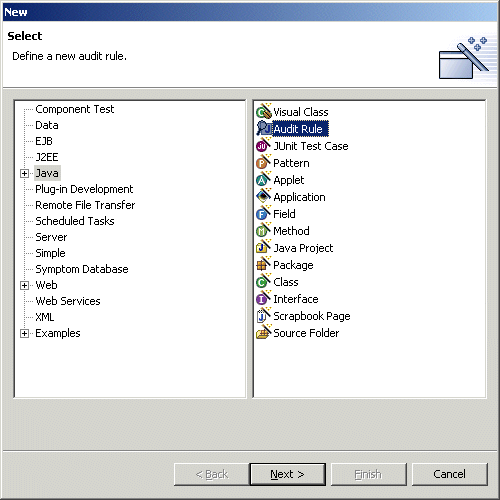
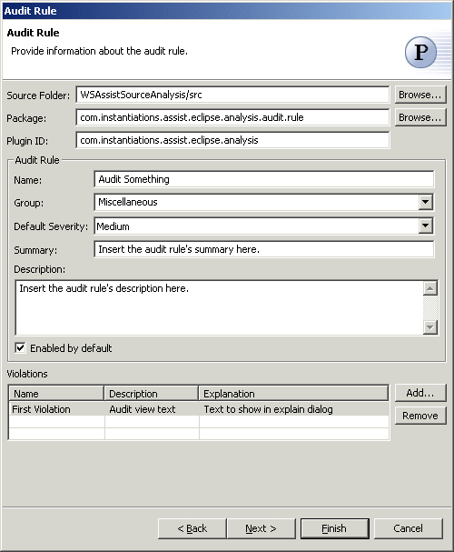
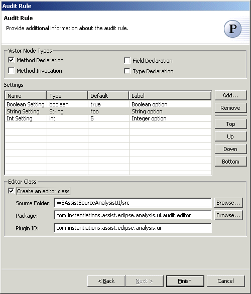

Audit Rule Wizard
The Audit Rule Wizard allows you to create new audit
rules. New audit rules can be created via the standard New wizard by selecting the "Java" category.
Audit rules can also be created by selecting the  Audit Rule pattern in the
Audit Rule pattern in the  Java Pattern Wizard.
Java Pattern Wizard.
In order to use the Audit Rule wizard, you should open your project's build path property page and add the CodeProAnalysis.jar contained in the com.instantiations.assist.eclipse.analysis plugin as an external JAR. If your audit rule will need an editor, also add the CodeProAnalysisUI.jar contained in the com.instantiations.assist.eclipse.analysis.ui plugin. If you want to avoid absolute pathnames on the build classpath you can introduce a class path variable and reference the CodeProAnalysis.jar relative to this variable.

The wizard will create an audit rule class as a subclass of AbstractAuditRule and optionally an editor class as a subclass of BasicAuditRuleEditor. A plugin.xml and plugin.properties fragment will also be created. Those fragments should be copied into your plugin.xml and plugin.properties files respectively.
Wizard

| Option | Description | Default |
| Source folder | Enter a source folder for the new audit rule class. Either type a valid source folder path or click Browse to select a source folder via a dialog. | The source folder of the element that was selected when the wizard was started. |
| Package | Enter a package to contain the new audit rule class. Either type a valid package name or click Browse to select a package via a dialog. | The package of the element that was selected when the wizard has been started. |
| Plugin ID | Type the ID of the plugin to define this rule | <blank> |
| Name | Type a name for the audit rule. | <Audit Something> |
| Group | Select the group to contain the audit rule. | <Miscellaneous> |
| Default Severity | Select the default severity for the audit rule. | <Medium> |
| Summary | Enter a short description of the audit rule. | <Insert the audit rule's summary here> |
| Description | Enter a long description of the audit rule. | <Insert the audit rule's description here> |
| Enabled by default | Determines whether the audit rule is enabled by default. | <true> |
| Violations | Specify the violations thrown by the audit rule. For each violation, specify its name, description (the text to be shown in the audit view) and explanation (the text to be shown in the explain dialog). | <blank> |

| Option | Description | Default |
| Method Declaration | Determines whether visitor code is generated for MethodDeclaration AST nodes. | <true> |
| Method Declaration | Determines whether visitor code is generated for MethodInvocation AST nodes. | <true> |
| Field Declaration | Determines whether visitor code is generated for FieldDeclaration AST nodes. | <false> |
| Type Declaration | Determines whether visitor code is generated for TypeDeclaration AST nodes. | <false> |
| Settings | Specify the settings needed by the audit rule. For each setting, specify its name, type (boolean, String or int), default value, and label (which will be shown in the editor). | <blank> |
| Create an editor class | Determines whether an editor class should be created. | <false> |
| Source folder | Enter a source folder for the new audit rule editor. Either type a valid source folder path or click Browse to select a source folder via a dialog. | The source folder of the element that was selected when the wizard was started. |
| Package | Enter a package to contain the new audit rule editor. Either type a valid package name or click Browse to select a package via a dialog. | The package of the element that was selected when the wizard has been started. |
| Plugin ID | Type the ID of the plugin to define this audit rule editor | <blank> |